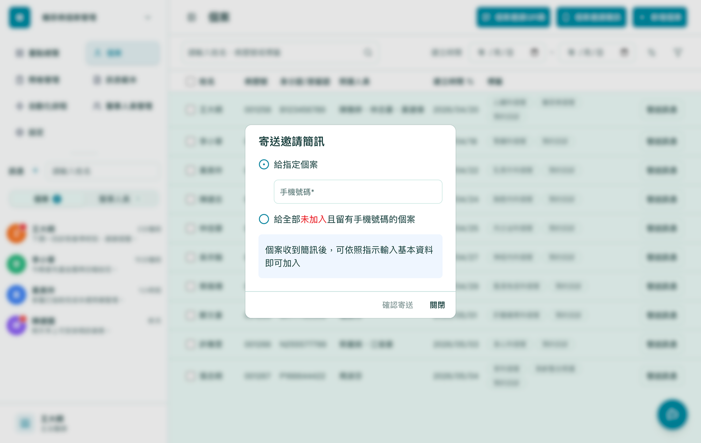
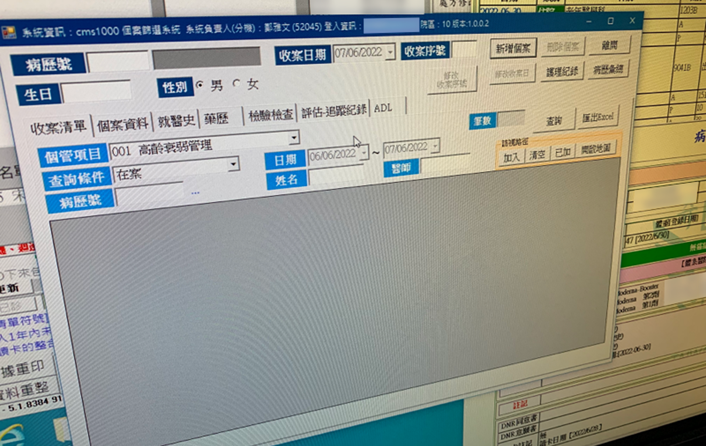
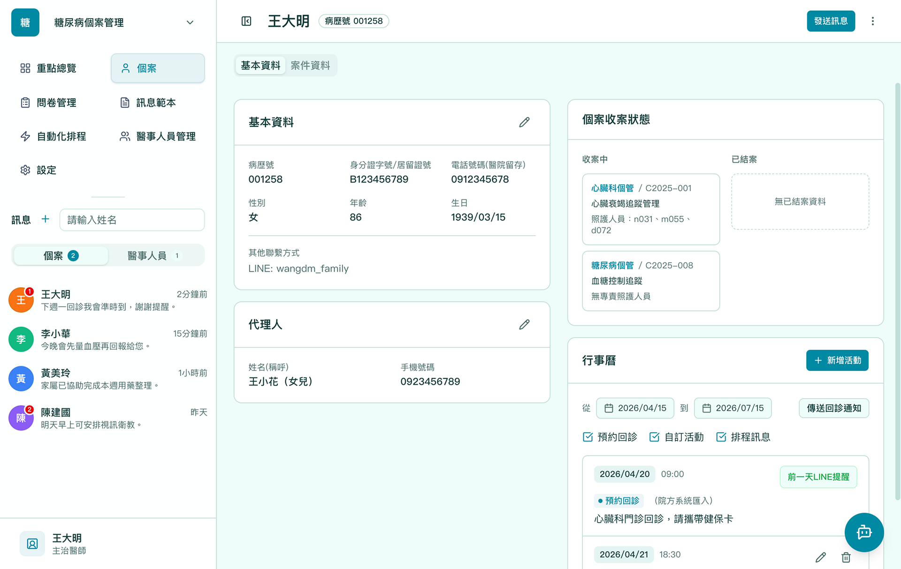
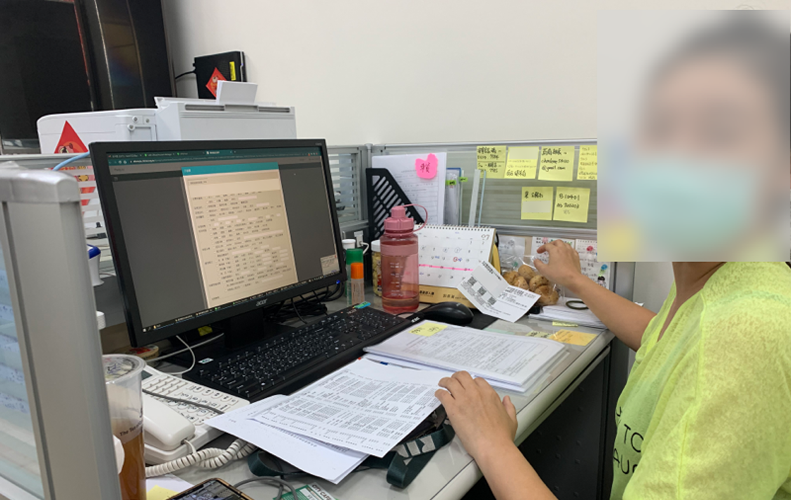
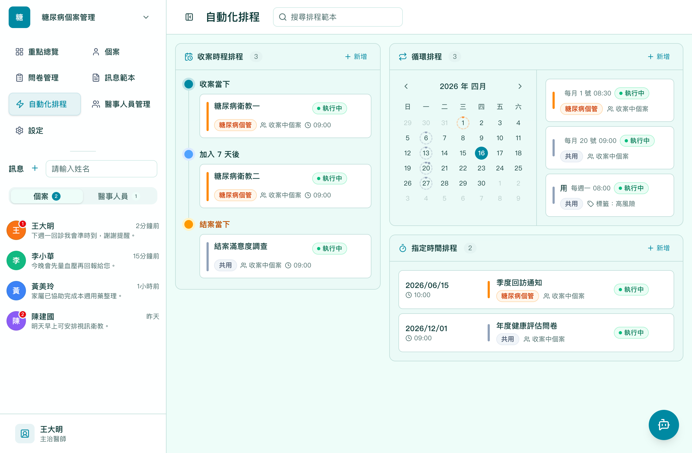

醫療
SaaS
顯著降低醫護負擔
智慧醫療個案管理平台
將慢性病管理機制自動化，讓個管師能夠專注於照護
80%
註冊完成率提升
3分鐘
平均註冊時間（原15分鐘）
2+醫事機構導入
馬偕、彰基等醫學中心

分散的系統與繁瑣流程，讓個管師無法專注照護
個案管理是從美國引進台灣的醫療照護機制，主要著重於慢性病管理。透過專業個案管理師提供衛教知識，協助個案改善慢性病狀態。
現有照護流程
- 1 加入Line官方帳號
- 2 身份辨識與標籤
- 3 個管師查找資料，擬定照護計畫
- 5 衛教與追蹤
- 6 評估與結案
核心問題
- 註冊流程繁瑣，對長輩不友善
- 個案資料散布各系統，個管師不容易查找
- 需要耗費很多精力追蹤個案狀況
- 下班後仍會被個案打擾
四項功能改善，全面提升個案管理效率
1
簡化註冊流程
Before
- 使用者需要主動搜尋並加入官方帳號
- 個管師需要去辨識使用者身份
After

- 個管師推送簡訊邀請連結，使用者點擊後即可使用
- 不需辨識使用者身份，系統自動辨識
2
整合病患資料
Before

- 需要從多個系統查找資料
- 資料分散，難以統整
After

- 以病人為中心的資料呈現
- 整合各系統資料於單一介面
3
智能追蹤排程
Before

- 需要手動追蹤個案狀況
- 行程管理困難，很多重覆的任務
After

- 預先排程未來幾週衛教或追蹤內容
- 系統自動推送訊息
4
機器人智能回覆
Before
- 下班後個管師不會回覆訊息
- 需要緊急處理時，個管師仍須協助
After
- 個管師下班後，由機器人代為回覆
- 規劃應答決策樹，讓機器人根據問題類型給予適當回覆
系統上線，顯著改善照護效率
+80%
註冊完成率提升
15→3分鐘
平均註冊時間縮短
2+醫事機構導入
馬偕・彰化基督教醫院
- 台北馬偕醫院、彰化基督教醫院陸續導入本系統
- 個管師行政負擔顯著降低，可更專注於照護
- 長輩使用意願大幅提升，系統黏著度提高